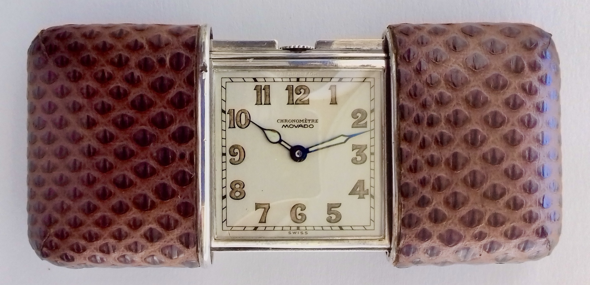
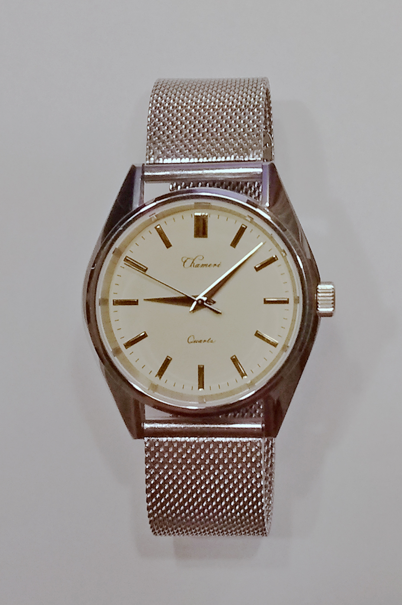
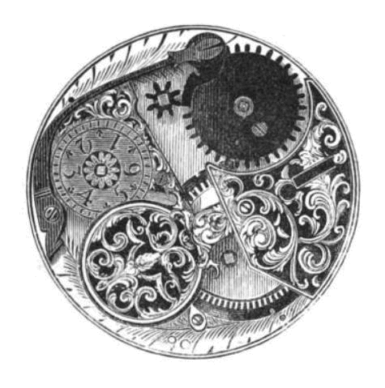
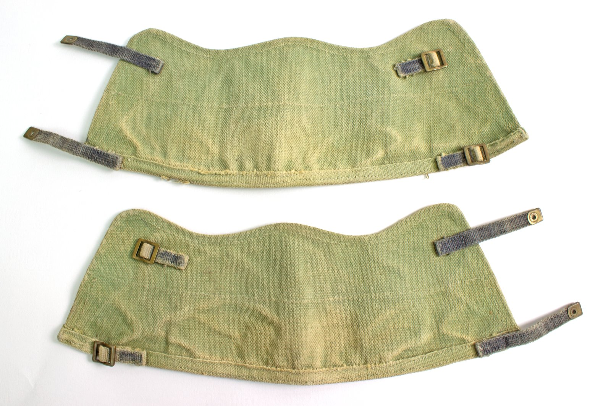

The Heritage of Chronometric Mastery
Born from a singular devotion to the split-seconds chronograph—widely revered as the most mechanically demanding complication in high horology.
The Architecture of Caliber IX
Founded on the principle of absolute kinematic clarity, Rattrapante IX rejects modular chronograph sandwiches in favor of fully integrated calibers. Every wheel, brake arm, and heart cam is arranged upon an untreated German silver (maillechort) baseplate, allowing collectors to observe the entire mechanical dance through the exhibition caseback.
Unlike mass-produced chronographs, the Rattrapante mechanism requires months of micromechanical adjustment. Master watchmakers bend individual spring levers by fractions of a millimeter to ensure perfect synchronization between the split-seconds caliper brake and the isolator disconnect wheel.


Free-Sprung Glucydur Balance
Variable inertia poising screws allow rate adjustment without the disruptive friction of a mobile regulator index, guaranteeing long-term chronometric stability.

Thermal Blued Steel
Steel screws and chronograph levers are hand-polished to a mirror sheen before undergoing controlled thermal heat treatment on brass shavings to achieve an intense royal azure oxide coat.

Archival Horology Museum
Our Mercer Street atelier curates rare historical split-seconds pocket chronographs dating from 1890 to 1940, serving as living blueprints for contemporary caliber innovations.

Hand-Stitched Alligator
Cut from matte Louisiana alligator scales, saddle-stitched with waxed silk thread, and fitted with our proprietary micro-adjustable platinum folding clasp.